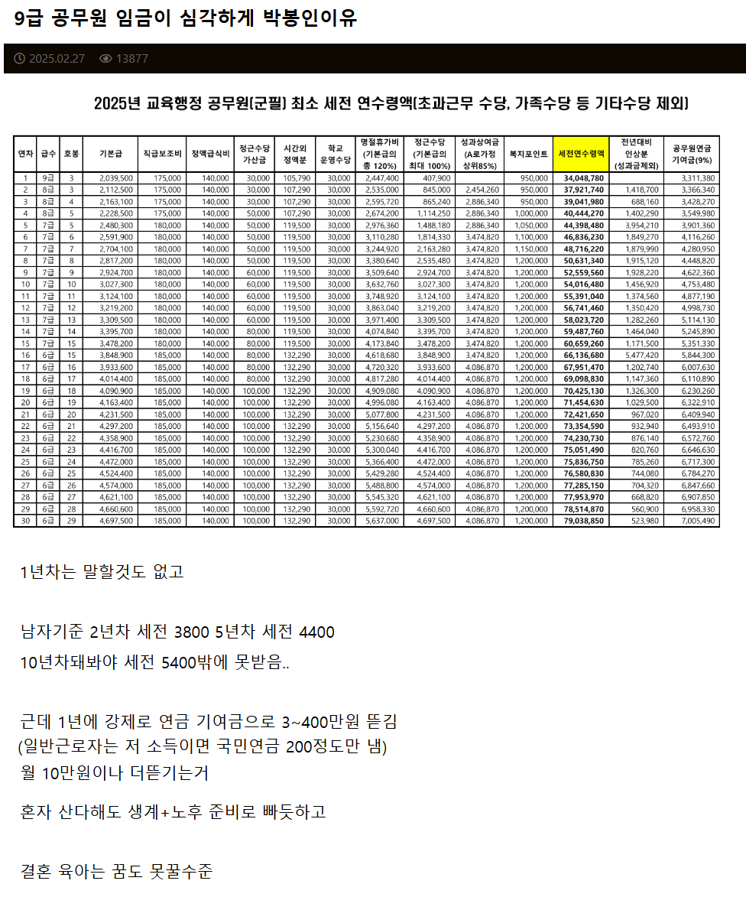

심각하게 박봉이라는 9급공무원근황
댓글
지방 좆소 세전 3천 초반대 안나오는데도 수두룩한데 9급이 더 낫네?
훨 낫지 지방 좆소 다니는 애들은 9급을 못 붙으니깐 ㅋㅋ
좃소랑 9급비비는건 저능아임
줜나 징징대네
솔직히 부럽다
팩트는 9급 돈얼마받는지 검색딸깍이면 알수있는거고 저거 알면서 공무원시험친거 ㅋㅋ
누칼협?
댓글만봐도 존나 똑똑하고 사회성 넘칠 거 같다 너같은 사람만 있어야 사회가 돌아가는데 아쉽다
9급 기준을 대기업에 비비니까 그렇지
옛날 9급이 아니구만
처우 많이 좋아졌네
그래도 정년까지 인컴이 늘어난다는 장점이 있지. 공무원들 동기진급했눈데 본인 못했다고 술먹으면서 한탄할때 배부른소리한다고 느껴짐. 누굴 기준삼냐가 중요한듯.
왜 근데 공무원 박봉을 좆소랑 비교하지 한국처럼 공공서비스 잘되는 곳이 없는데
내 직렬쪽 국가직은 복지포인트 저기서 반으로 잘리고 근속승진인곳이 많아서... 저정도만 되어도 여한 없겠다. 근데 요즘도 저리 진급이 잘돼?
누가 하래?
요즘은 너무 다들 똑똑해서 미래를 땡겨와서 생각해서 그럼
딱 10년차되면 연봉 6천정도 맞춰지면서 숨쉬어지고 50대부턴 상대적으로 놀면서 돈버는거
대신현재가치기준 연봉1억은 대부분 불가.
병신
기술직 미달나는 이유가 뭔지 아냐 ㅋㅋ
사기업보다 돈적게주고 일많고 이런건 부차적인 문제임
내일 기능사 시험쳐도 떨어질것 같은 멍청이 들이
기술직 6급달고 미친짓을 시키려 하니
그대로 했다가 나중이 교도소 갈것같아서 도망가는것임ㅋㅋㅋ
문제는 일행직은 멍청이가 6급달때까지 별일없었으니
좆될것 같은 헛소리인지 구별 못하고 ㅇㅋ 한다음 넘김
진짜 천지분간 못하고 시행했다 좆될것 같다?ㅋㅋㅋ
그건 너네가 제대로 못해서라 씨부릴 준비까지 다 해놓은상태임
그리고 뭣만하면 업체불러 앵무새질도 하고
기존쎄가 막나가지 않는 이상 책임은 말단이 지게됨
걍 기술직은 하지마라 시켜줘도 안하는게 답임
기술직은 걍 국가직말고 하면안됨
이런 구조라서 탈주 못하는 새끼는 그냥 무능한놈임
아니면 아예 짬차고 들어와서 호봉좀 된놈이거나
개폐급새끼 헛소리를 쌩깔정도로
누가봐도 경력이 화려한놈 아니면
말빨조차 안먹혀서 감당하기 힘들음
원인을 돈때문이라 하는놈은 착각임
공무원놈들 돈 생각보다 많이 받는다
정작 탈주하는 이유는 따로있는데 돈 타령 해봤자 의미없음ㅋ
지들이 그래서 뭐 다른데 가면 그돈이라도 받을것 같냐고 ㅋㅋㅋ
빠가까를 만든다.
제일 나 힘들다 징징거리는애들이 공무원임
결혼, 육아 해도 됨. 더 낮아도 해도 됨. 당장 서울 어린이집 가도 그런 집안애들 꽤 됨.
행정직은 솔직히 적은 돈은 아니라 생각함. 기술직이 문제지.
부자들의세금퍼먹어서 국가가 퍼주는 월급 팍팍 퍼먹으면서
월급삭감해도되겠네.
그러면 또 공징징들 우리는 그세금 안내냐하겠지 근데 월 억버는사람들에비해 지들내는세금이 얼마나낸다고. 결국 세금받아서 먹고살면 감사합니다!! 해야지
이러면 긁히는 공무원들 또 보임 ㄹㅇ ㅋㅋㅋ
너가 하면 딱이다
아 공무원 하고 싶다
지금 지방 기술직들은 미달임 너만 오면 ㄱ
스무살에 하면됨
2026년 국가직 9급
교육행정 합격컷 96점
일반행정 합격컷 90점
세무직 합격컷 77점
교행은 압도적으로 어려움
그건 대학교 교직원되는 국가직 교행이라 그렇고. 초중고 행정실에서 일하는 지방교행은 수월함
국가직 말하고 있는데 지방직을 왜 말하는지 모르겠지만 지방직도 타 직렬에 비교하면 압도적으로 높은데 최소한 검색이라도 해라
세무직은 세법회계가 벽이라 그런가 낮네
안 높아 검색 좀 해봐.. 그동네 일행이랑 별 차이 안나
지방직은 좆밥인데
국가직은 자리가없고 지방직치는애들이 시험삼아 한번씩 쳐보는거라 경쟁률뻥튀기된거다 븅신아
어렵긴하겠네
정리해줌
정상적인대학 서성한아니더라도
못해도 국민인하아주나 상위지거국 4년제 공대 졸업했다 > 존나박봉임 바로 공뭔하지 대학간게 ㅂㅅ 수준
문과고졸잡대국평오좆소롤대남드립넷 > 생애소득기준 9급공뭔이면 최소 상위 15퍼
박봉이다 아니다 둘다 맞음 ㅇㅇ 반박시 너가병신
잘 받는구만